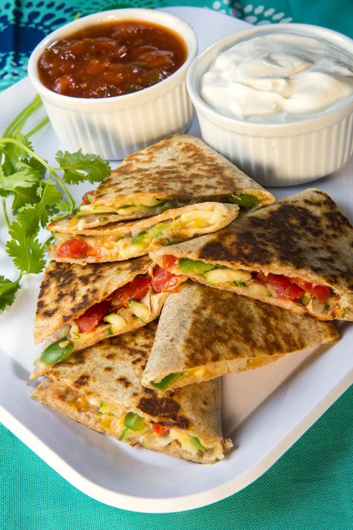

Quesadillas

Description
Are you looking for an appetizer before you eat street tacos? A quesadilla
is quick and easy to make with very minimal ingredients. You can even enjoy this cheesy goodness with
pickled carrots as a side.
Ingredients
- Flour Tortilla
- Your favorite cheese (or cheeses)
Steps
- Very lightly oil a pan and place on medium heat.
- Before the pan gets too hot, place a tortilla on the pan.
- Cover half of the tortilla with your favorite cheeses.
- To avoid burning the tortilla, rotate the tortilla every 30 seconds or sooner.
- Once you start to see the cheese melt, fold the uncovered tortilla side over the cheese side and press down.
- After a minute, the cheese will fuse to the top of the tortilla. Carefully flip the quesadilla over and cook for another minute.
- Remove the quesadilla and allow to cool for a minute.
- You can slice the tortilla into triangles for easy servings.
- Enjoy with your favorite salsa or sour cream!